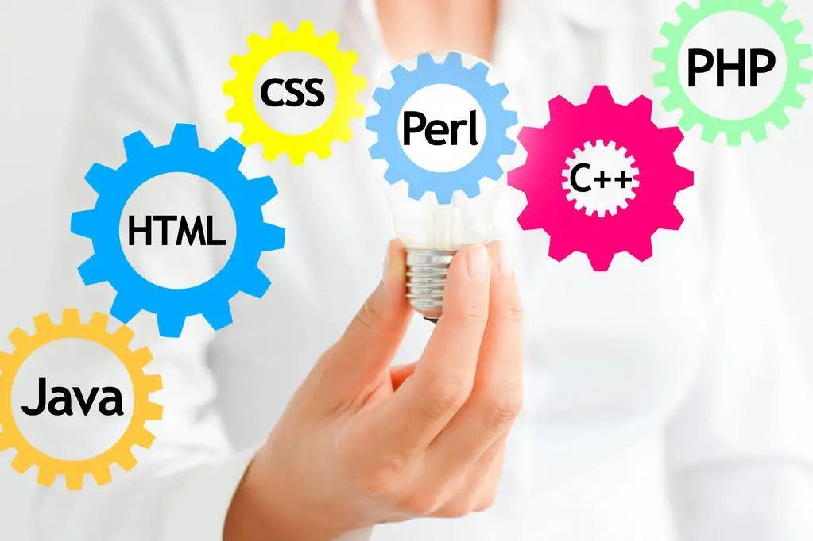
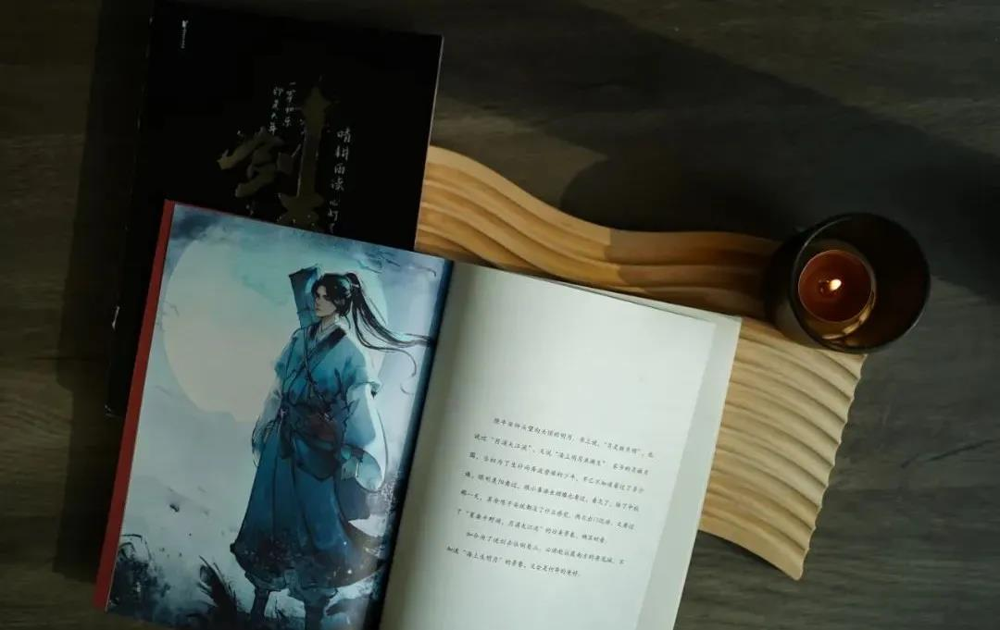
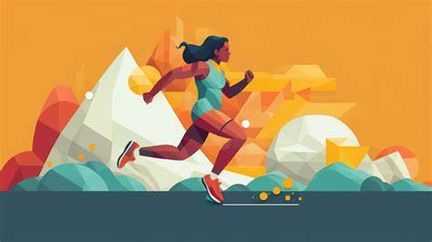

编程
我热衷于探索不同的编程语言和框架，如Python、Java和React等。通过不断学习和实践，我开发了许多有趣的项目，从简单的脚本到复杂的应用程序，每一个项目都是一次新的挑战和成长。
阅读
阅读是我生活中不可或缺的一部分。我喜欢阅读各种类型的书籍，尤其是技术类书籍，它们帮助我不断更新知识，保持对新技术的敏锐洞察力；而科幻类书籍则带我进入一个充满想象力的世界，激发我的创造力。
运动
为了保持身体健康和良好的精神状态，我经常进行有氧运动，比如跑步和游泳。跑步让我在户外呼吸新鲜空气，感受大自然的美好；游泳则是一项全身性的运动，能够锻炼我的耐力和协调性。
打CS

在紧张的学习和工作之余，打CS是我放松身心的好方式。我特别喜欢vitality战队，他们的高超技巧和团队协作精神让我钦佩不已。通过观看他们的比赛和自己的实践，我也在不断提高自己的游戏水平。